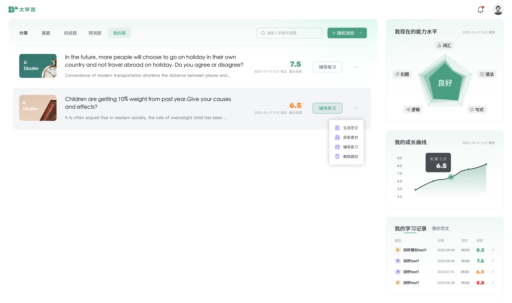
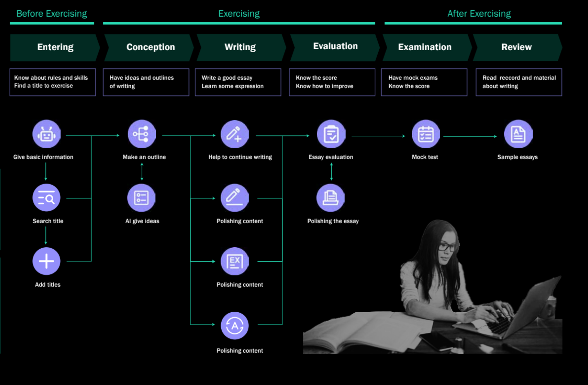
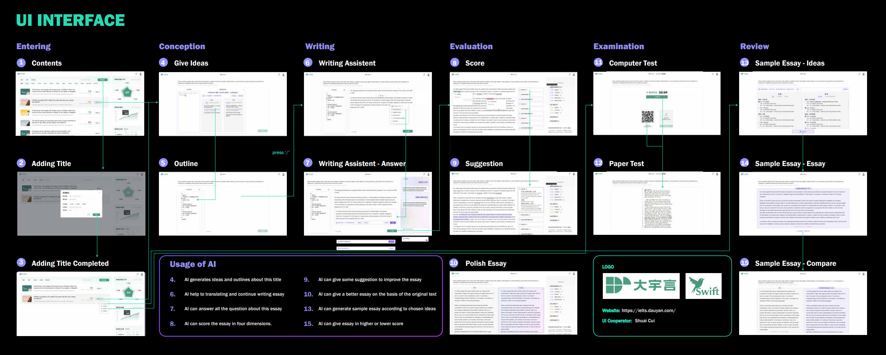

A UI/UX design project for an AI-assisted learning platform. UI Cooperator: Shuai Cui.

The IELTS exam is a critical gateway for students, yet many struggle with the writing section. Our user analysis of self-studying students in Beijing revealed significant challenges: a staggering 77% lack motivation, and 43% have no structured study plan. They often feel anxious, are unfamiliar with grading criteria, and have difficulty generating ideas. This pointed to a clear need for a tool that not only provides writing practice but also offers structured guidance, personalized feedback, and motivational support.
To design a clear, accessible, and motivating interface that leverages GPT to help students practice IELTS writing. The platform aims to assist with idea generation, provide structured feedback based on official criteria, and build user confidence through a guided learning journey.
Our design strategy focused on transforming the solitary, often frustrating, process of self-study into an interactive and supportive experience. We designed a user flow that mirrors a student's natural workflow while integrating AI assistance at each critical step. The key functionalities I designed include:
Directly tackles the user's primary pain point of generating ideas by providing AI-powered suggestions and structured outlines.
Offers real-time assistance like translation and sentence continuation to overcome writer's block and improve composition flow.
Provides instant feedback based on the four official IELTS dimensions, helping users understand their weaknesses.
Suggests improvements and generates sample essays, allowing users to learn from concrete examples.
Simulates both computer and paper-based test environments to reduce exam-day anxiety and build familiarity.
Offers tailored suggestions that help introverted learners improve without the pressure of institutional learning.

The result is a cohesive and intuitive platform available at ielts.dauyan.com. My design work, in collaboration with Shuai Cui, successfully translated complex AI functionalities into a simple, user-friendly interface. The modular system, which includes a responsive writing area, contextual AI tools, and a clear feedback dashboard, simplifies the complex process of preparing for the IELTS writing test.

Visit Website